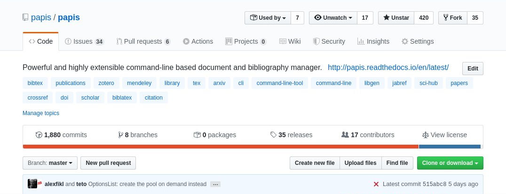
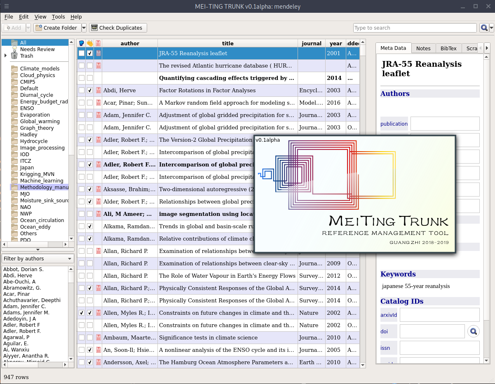
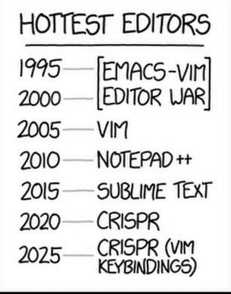

# Papis ### An open source/open data bibliography manager <!-- .slide: data-background="#aa5faf" --> <!-- .slide: data-transition="concave" --> <center> Alejandro Gallo <br> </center> --- ### Papis is <!-- .slide: data-transition="concave" --> --- ### Papis stands for * owning your data - know exactly what and where your data is * simple architecture - every document is just a folder * extensibility * work in groups * play well with other tools (e.g. **git**) --- ### Growing community  --- ### Growing papis based projects <!-- .slide: data-background="images/papis-org.png" --> --- ### We need your help <!-- .slide: data-background="images/issues.png" --> --- ### Projects --- * Join the PyQt5 gui **MeiTingTrunk** and papis.  --- * Type check the source code. <center> </center> --- * Improve the terminal user experience. <center> <img style="width:50%" src="images/prompt.png"> </center> --- * Build an **emacs** or improve **vim** interface. <center> <img style="height: 3em" src="images/emacs.png"> <img style="height: 3em" src="images/vim.png"> </center> <center>  </center> --- * Implement full text search for pdfs using existing libraries. * Implement a web application, (**vue**, **elm**, **angular**, **purescript**...) * If you have more ideas, tell me about it!
Thank you!